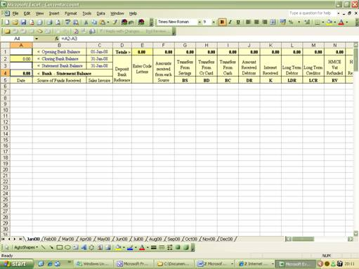
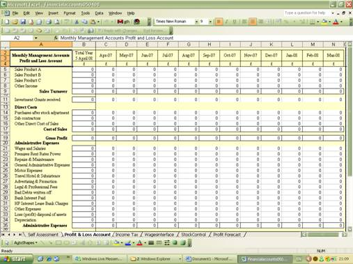
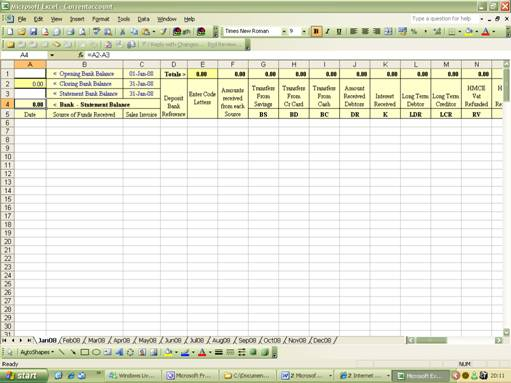
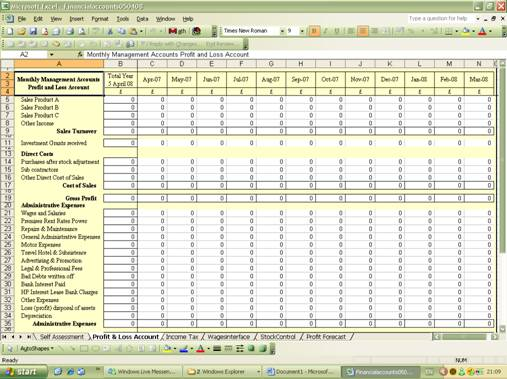

DIY Accounting Products
DIY Accounting provides Excel bookkeeping and accounting spreadsheets for the UK small business market. Designed by a Chartered Management Accountant, each product is a self-contained set of Excel workbooks covering sales, purchases, profit and loss, and tax calculations appropriate to your business type.
All products are compatible with Microsoft Excel and OpenOffice Calc. They are available as immediate downloads and include step-by-step user guides.
All products are free to download. If you find them useful, please consider making a voluntary donation to support continued development.
Browse our knowledge base for articles on bookkeeping, tax returns, VAT, payroll, and more.
“I highly recommend the DIY Accounting accounts packages — far better value and much simpler than expensive subscription accounting packages.”
— Steve Walsh
“I've used DIY accounting for over 10 years and can recommend it to any small business owner.”
— Andrew Williamson
“Easy to use and reliable software package, good / clear reporting — any time a clear picture of business figures.”
— Laura Paterson
Feature comparison across the DIY Accounting product range
Basic Sole Trader
The simplest accounting package for sole traders who are not VAT registered and have no employees. Includes a sales spreadsheet, purchases spreadsheet, and financial accounts producing a profit and loss account and self-employed short tax return figures.
- Sales spreadsheet
- Purchases spreadsheet
- Profit & loss account
- Self-employed tax return
- Income tax calculation

Self Employed
Easy-to-use accounting software for anyone self employed, whether VAT registered or not, with or without employees. Produces both the short and full self-employed tax returns along with quarterly VAT returns.
- Sales spreadsheet
- Sales invoices
- Purchases spreadsheet
- Cash & bank reconciliation
- VAT returns
- Profit & loss account
- Self assessment tax return
- Payslips
Company Accounts
Small business accounting software for limited liability companies, whether VAT registered or not, with or without employees. Uses double-entry bookkeeping and produces quarterly VAT returns, profit and loss accounts, balance sheets, year-end accounts for Companies House, and CT600 corporation tax calculations.
- Sales spreadsheet
- Sales invoices
- Purchases spreadsheet
- Cash & bank reconciliation
- VAT returns
- Profit & loss account
- Balance sheet
- Final accounts
- Corporation tax (CT600)
- Fixed assets & capital allowances
- Payslips (5, 10, or 20 employees)
Taxi Driver (Cabsmart)
Practical bookkeeping software designed for self-employed taxi drivers, private hire, van drivers, and couriers. Automatically compares mileage allowances against actual vehicle running costs and selects the most tax-efficient method for your expenses claim.
- Income & expenses tracking
- Mileage allowance calculation
- Vehicle expense comparison
- Profit & loss account
- Self-employed tax return
- Fixed assets & capital allowances
- Income tax estimation
Payslips
A payslip generator for businesses that use a separate tax calculator such as HMRC's Basic PAYE Tools. Enter the tax and National Insurance figures and the spreadsheet produces printed payslips on plain paper with a running total of wages and deductions throughout the year.
- Weekly or monthly payslips
- Plain paper printing
- Running yearly totals
- Compatible with HMRC Basic PAYE Tools
- Available for 5 or 10 employees
Partner
Business Insurance from PolicyBee
Looking for professional insurance? Try PolicyBee — an online broker specialising in professional indemnity, public liability, employers' liability and office insurance for freelancers and small businesses. Hassle-free protection for sole traders and limited companies.
- Professional indemnity insurance
- Public liability insurance
- Employers' liability insurance
- Office & contents insurance
Rated 4.8/5 from 6,000+ reviews · Feefo Platinum Trusted Service Award
Spreadsheet Screenshots
 


